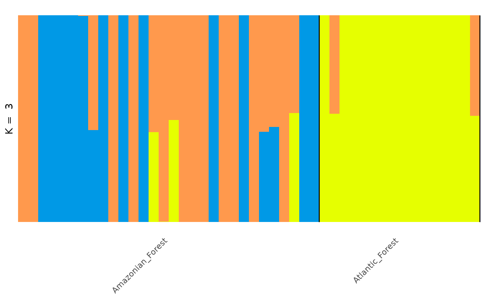
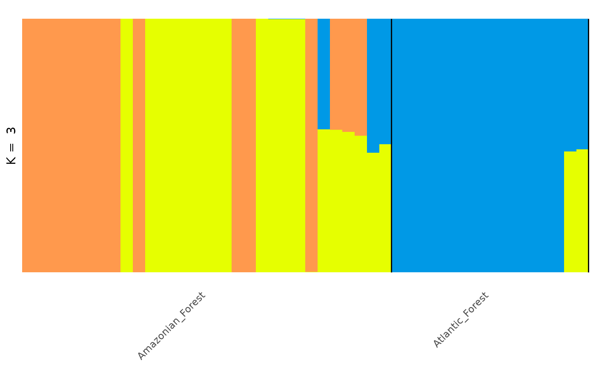
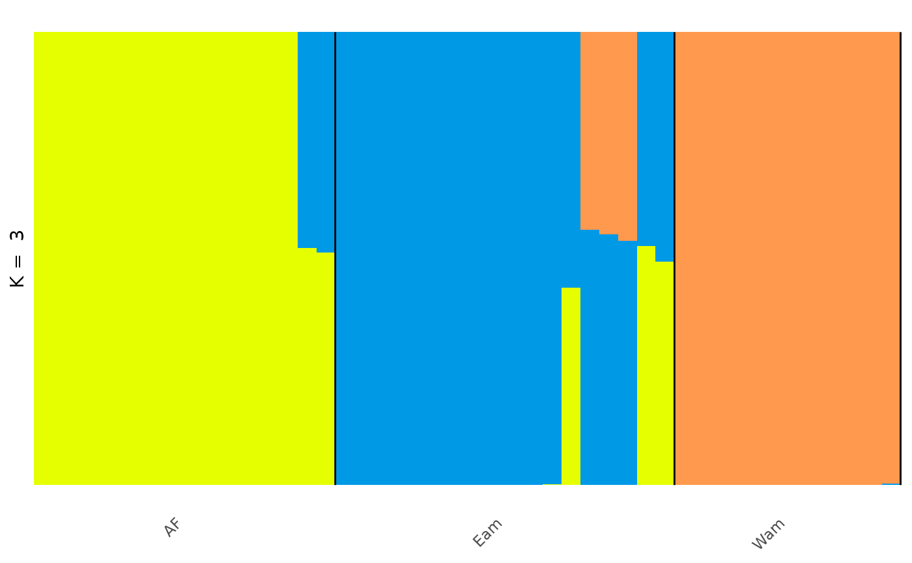
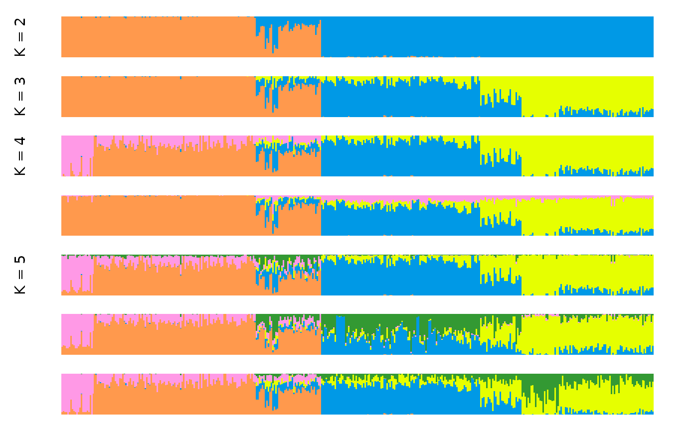
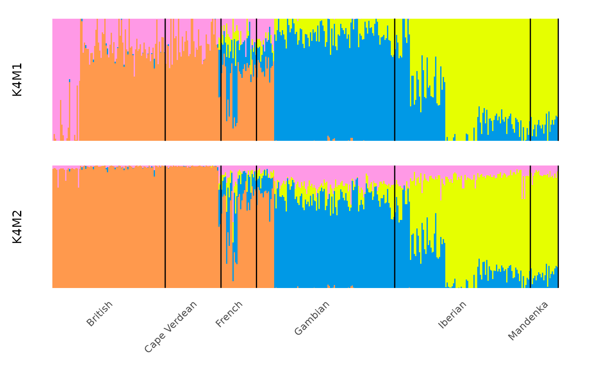
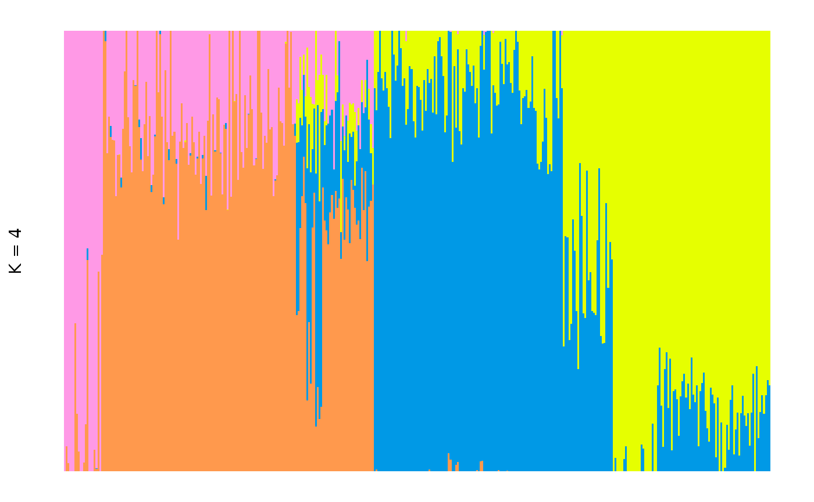
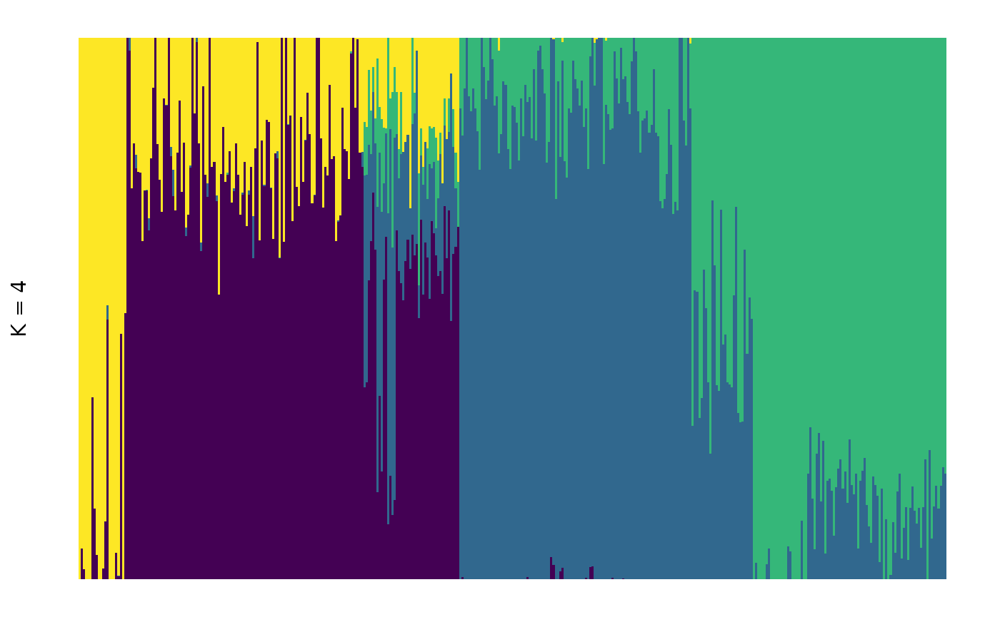

Overview of tidygenclust
tidygenclust.RmdUsing tidygenclust for clustering in R
tidygenclust provides functions and methods to run
genetic clustering in R, using the commonly used ADMIXTURE program, as
well as the python package fastmixture. It also helps to
align and compare multiple runs of the same or different K using the
functionalities of the python package Clumppling. This
package builds on tidypopgen, enhancing the grammar of
population genetics with a focus on genetic clustering.
fastmixture (https://github.com/Rosemeis/fastmixture) (Santander et
al. 2024) is a python tool for ancestry estimation using genotype data.
It uses a model-based approach with comparable accuracy to that of of
popular clustering tool ADMIXTURE, but over considerably faster time
scales making it a more scaleable option for large genetic data
sets.
Clumppling (https://github.com/PopGenClustering/Clumppling) (Liu,
Kopelman, & Rosenberg, 2024) is a python package which aligns
multiple runs of a clustering analyses allowing for easy comparison and
summary of clustering results both across different values of K and for
repeated runs within K.
With the tidygenclust package we provide a direct R
interface to the python based fastmixture using
reticulate and integrate it with the
tidypopgen package for easy genetic data manipulation
entirely within R. Additionally, the outputs from clustering analyses
(irrespective of the algorithm used) can be easily visualised using the
gt_clumppling function, which allows for easy alignment and
comparison of multiple clustering results.
Genetic data analyses through the integration of
tidypopgen and tidygenclust seamlessly joins
upstream genetic data manipulation (tidypopgen) with
downstream clustering analyses and extensive visualisation options of
the clustering results (tidygenclust) in an integrated
pipeline all natively within R.
Installation
We use reticulate to seamlessly integrate the required
python packages into R, this means that you, as a user, should not need
to worry about the details of the python packages or dependencies.
The first time we run tidygenclust, we need to install
the python packages. We can do this by simply running the following
commands:
library(tidygenclust)An example workflow
To explore the use of tidygenclust with
tidypopgen, we will investigate the genetic ancestry of the
anolis lizard Anolis punctatus across its range in South
America, using data from Prates et al 2018.
We downloaded the vcf file of the genotype data from the Prates et al 2018 GitHub repository which can be accessed here and compressed it to a vcf.gz file.
Read data into gen_tibble format
First, using tidypopgen we can read our compressed vcf
file directly into R to create our gen_tibble:
## Loading required package: dplyr##
## Attaching package: 'dplyr'## The following objects are masked from 'package:stats':
##
## filter, lag## The following objects are masked from 'package:base':
##
## intersect, setdiff, setequal, union## Loading required package: tibble
vcf_path <- system.file(
"/extdata/anolis/punctatus_t70_s10_n46_filtered.recode.vcf.gz",
package = "tidypopgen"
)
anole_gt <- gen_tibble(vcf_path,
quiet = TRUE, backingfile = tempfile("anolis_"),
parser = "cpp"
)By inspecting our gen_tibble we can see that we have a
total of 46 individuals and 3249 loci, but no population information
attached yet:
anole_gt## # A gen_tibble: 3249 loci
## # A tibble: 46 × 2
## id genotypes
## <chr> <vctr_SNP>
## 1 punc_BM288 [0,0,...]
## 2 punc_GN71 [2,0,...]
## 3 punc_H1907 [0,2,...]
## 4 punc_H1911 [0,2,...]
## 5 punc_H2546 [0,1,...]
## 6 punc_IBSPCRIB0361 [0,0,...]
## 7 punc_ICST764 [0,0,...]
## 8 punc_JFT459 [0,0,...]
## 9 punc_JFT773 [0,0,...]
## 10 punc_LG1299 [0,0,...]
## # ℹ 36 more rowsWe can easily attach the population metadata to our
gen_tibble which is stored in anther file that can be found
on the Prates et al 2018 GitHub repository here.
We can read this file into R and attach the population information to
our gen_tibble:
pops_path <- system.file("/extdata/anolis/punctatus_n46_meta.csv",
package = "tidypopgen"
)
pops <- readr::read_csv(pops_path)## Rows: 46 Columns: 5
## ── Column specification ────────────────────────────────────────────────────────
## Delimiter: ","
## chr (3): id, population, pop
## dbl (2): longitude, latitude
##
## ℹ Use `spec()` to retrieve the full column specification for this data.
## ℹ Specify the column types or set `show_col_types = FALSE` to quiet this message.Now we can inspect the gen_tibble object again to see
that the population information has been added to our genotypes:
anole_gt## # A gen_tibble: 3249 loci
## # A tibble: 46 × 6
## id genotypes population longitude latitude pop
## <chr> <vctr_SNP> <chr> <dbl> <dbl> <chr>
## 1 punc_BM288 [0,0,...] Amazonian_Forest -51.8 -3.32 Eam
## 2 punc_GN71 [2,0,...] Amazonian_Forest -54.6 -9.73 Eam
## 3 punc_H1907 [0,2,...] Amazonian_Forest -64.8 -9.45 Wam
## 4 punc_H1911 [0,2,...] Amazonian_Forest -64.8 -9.44 Wam
## 5 punc_H2546 [0,1,...] Amazonian_Forest -65.4 -9.60 Wam
## 6 punc_IBSPCRIB0361 [0,0,...] Atlantic_Forest -46.0 -23.8 AF
## 7 punc_ICST764 [0,0,...] Atlantic_Forest -36.3 -9.81 AF
## 8 punc_JFT459 [0,0,...] Atlantic_Forest -40.5 -20.3 AF
## 9 punc_JFT773 [0,0,...] Atlantic_Forest -40.5 -20.0 AF
## 10 punc_LG1299 [0,0,...] Atlantic_Forest -39.1 -15.3 AF
## # ℹ 36 more rowsFinally, we group our gen_tibble by population to make
it easier to plot later, as the grouping information will be passed to
objects created by clustering algorithms:
Data preparation and PCA
To get an initial idea of our data and potentially help choose a
reasonable starting value for K we may want to run a principal component
analyses (PCA) to explore the data prior to running the
fastmixture analyses.
Before running the PCA we also need to impute any missing values that may be present in our data.
We can quickly and easily impute and perform a PCA on our
gen_tibble with tidypopgen:
anole_gt <- anole_gt %>% gt_impute_simple(method = "mode")
anole_pca <- anole_gt %>% gt_pca_partialSVD(k = 2)
library(ggplot2)
anole_pca %>% autoplot(type = "scores") +
aes(color = anole_gt$population) +
labs(color = "Population")From the PCA plot we can see that the Amazonian forest and Atlantic forest populations separate quite clearly. Additionally, whilst the Atlantic forest individuals cluster tightly together the Amazonian forest individuals are quite spread indicating three major clusters in the anolis.
Running the fastmixture algorithm
Now we can run gt_fastmixture on our
gen_tibble objec t(note that gt_fastmixture
can also work directly on a PLINK bed file).
As a minimum the gt_fastmixture command requires you to
supply your input data, in this case a gen_tibble, and
specify a value for the number of clusters K.
Based on our PCA results K = 3 may be a good place to start:
anole_res <- anole_gt %>% gt_fastmixture(k = 3)## -------------------------------------------------
## fastmixture v1.0.3
## C.G. Santander, A. Refoyo-Martinez and J. Meisner
## K=3, seed=42, batches=32, threads=1
## -------------------------------------------------
##
## Loaded 46 samples and 3249 SNPs.
## Random initialization.
## Initial log-like: -220422.9
## Performed priming iteration (0.0s)
##
## Estimating Q and P using mini-batch EM.
## Using 32 mini-batches.
## (5) Log-like: -58511.2 (0.0s)
## (10) Log-like: -58499.3 (0.0s)
## (15) Log-like: -58487.9 (0.0s)
## (20) Log-like: -58483.5 (0.0s)
## (25) Log-like: -58472.6 (0.0s)
## (30) Log-like: -58453.3 (0.0s)
## (35) Log-like: -58458.6 (0.0s)
## Halving mini-batches to 16.
## (40) Log-like: -58447.8 (0.0s)
## (45) Log-like: -58444.6 (0.0s)
## (50) Log-like: -58465.7 (0.0s)
## Turning on safety updates.
## (55) Log-like: -58442.5 (0.0s)
## (60) Log-like: -58444.4 (0.0s)
## Halving mini-batches to 8.
## (65) Log-like: -58439.3 (0.0s)
## (70) Log-like: -58438.9 (0.0s)
## Halving mini-batches to 4.
## (75) Log-like: -58438.0 (0.0s)
## (80) Log-like: -58437.8 (0.0s)
## Halving mini-batches to 2.
## (85) Log-like: -58437.7 (0.0s)
## (90) Log-like: -58437.7 (0.0s)
## Running standard updates.
## No improvement. Returning with best estimate!
## Final log-likelihood: -58437.6
## Total elapsed time: 0m0sThis will very quickly return a single Q matrix, for one
specified K value. But, most likely we want to explore multiple values
for K and should run multiple repeats of each K to assess the stability
of the clustering. The gt_fastmixture function allows you
to specify a vector of K values you wish to run and the number of
repeats per K value.
Now we are doing multiple repeat runs it is also important that for each repeat we specify a different seed number to ensure consistent and robust results.
Let’s now set values of K from 2 to 4 and run 3 repeats of each K
value, setting a different random seed for each repeat. We also set the
option no_freqs to FALSE to include
P-matrices, containing ancestral allele frequencies, to our output:
anole_res <- anole_gt %>% gt_fastmixture(
k = c(2:4), n_runs = 3,
seed = c(42, 2, 16), no_freqs = FALSE
)Our results are returned as a gt_admix object which
neatly packages the outputted Q matrices, and the corresponding K value
for that run in a structured list.
We can get a summary of our gt_admix results object to
see exactly what it contains:
## Admixture results for multiple runs:
## k 2 3 4
## n 3 3 3
## with slots:
## $Q for Q matrices
## $P for matricesFrom the summary we can see our gt_admix object contains
Q and P matrices for 3 repeat runs of K values 2, 3 and 4 as
expected.
We may want to inspect a specific Q or P matrix in our
gt_admix object and this can be done using the
get_q_matrix or get_p_matrix functions, we
simply need to specify the K value and the repeat run number we are
interested in.
For example we can view the Q matrix corresponding to the second run of K = 4 like so:
anole_res %>%
get_q_matrix(k = 4, run = 2) %>%
head()## .Q1 .Q2 .Q3 .Q4
## [1,] 9.999923e-06 9.999923e-06 9.999923e-06 9.999700e-01
## [2,] 9.999914e-06 9.999914e-06 9.999914e-06 9.999700e-01
## [3,] 3.179351e-01 6.820449e-01 9.999912e-06 9.999912e-06
## [4,] 9.999700e-01 9.999868e-06 9.999868e-06 9.999868e-06
## [5,] 2.626097e-01 7.373703e-01 9.999908e-06 9.999908e-06
## [6,] 9.999845e-06 9.999845e-06 9.999700e-01 9.999845e-06Or the P matrix of the first run of K = 3:
anole_res %>%
get_p_matrix(k = 3, run = 1) %>%
head()## [,1] [,2] [,3]
## [1,] 0.3920996 0.0000100 1e-05
## [2,] 0.1677997 0.8351086 1e-05
## [3,] 0.0000100 0.8396586 1e-05
## [4,] 0.1833421 0.4999566 1e-05
## [5,] 0.3321308 0.0000100 1e-05
## [6,] 0.2612136 0.9999900 1e-05Visualising the results
For a quick visualisation of a single Q matrix we can use the
autoplot function in tidypopgen:

It is possible to rearrange individual within groups according to their ancestral components. This makes for a visually appealing plots that focuses on the main ancestral component within each plot, but makes multiple plots not comparable (as individuals will not be in the same order across plots):

Note that the colours assigned to each component are arbitrary and
may (and in this case did) change if we reorder individuals. If you want
complete control of your plot, you can create your own customised plot
with ggplot2; we can use tidy() to easily
extract the required information from a gt_admix object to
use for the plot:
anole_q_tbl <- anole_res %>%
get_q_matrix(k = 3, run = 1) %>%
tidy(data = anole_gt)
anole_q_tbl## # A tibble: 138 × 4
## id group q percentage
## <chr> <chr> <chr> <dbl>
## 1 punc_BM288 Amazonian_Forest .Q1 1.000
## 2 punc_BM288 Amazonian_Forest .Q2 0.00001000
## 3 punc_BM288 Amazonian_Forest .Q3 0.00001000
## 4 punc_GN71 Amazonian_Forest .Q1 1.000
## 5 punc_GN71 Amazonian_Forest .Q2 0.00001000
## 6 punc_GN71 Amazonian_Forest .Q3 0.00001000
## 7 punc_H1907 Amazonian_Forest .Q1 0.00001000
## 8 punc_H1907 Amazonian_Forest .Q2 1.000
## 9 punc_H1907 Amazonian_Forest .Q3 0.00001000
## 10 punc_H1911 Amazonian_Forest .Q1 0.00001000
## # ℹ 128 more rowsIn the Prates et al 2018 study, the anolis lizards were found to split into three genetic groups, two in the Amazonian forest; the Eastern Amazonia (Eam) and Western Amazonia (Wam) and one in the Atlantic Forest (AF).
If we wanted to change the grouping variable of our plot to match
these groups we can use the gt_admix_reorder_q function
which will reorder the Q matrix by a chosen grouping variable. Our
metadata contains this new grouping information in the column
pop:
anole_gt_admix <- anole_res %>% gt_admix_reorder_q(group = anole_gt$pop)We can then visualise our results again with this new grouping:

Visualisations with gt_clumppling
Whilst this gives us a useful, quick visual to check one particular Q
matrix, ideally we want to be able to compare the different K values we
tried in our clustering analyses and to assess the stability of the
multiple repeat runs. For proper comparative visualisation and
assessment of the different K values and repeats we can use the
gt_clummpling function which aligns multiple clustering
results within and between different values of K and allows for easy
visualisation in multipartite plots.
Once we use gt_clumppling, the resulting plots will only
show individuals in the order in which they were found in the
gt_admix object. This means that, if they were not ordered
into groups, we will not be able to annotate groups. One solution would
be to arrange our original gen_tibble by group before starting the
analysis, but we can also use gt_admix_reorder_q to reorder
the individuals in the groups
which we have done in the previous step.
Now let’s run the Clumppling analysis on our
gt_admix object:
anole_clump <- anole_gt_admix %>% gt_clumppling()Now we can visualise the aligned Q matrices for each value of K we tried:
We can see that for the anolis dataset there is only one mode for
each value of K. For a more complex example, where multiple modes are
found in runs of the same K, we can explore a dataset investigating the
the ancestry of Cape Verde individuals, the same example used in the
Clumppling manual.
This time we will read in the Q matrices directly from a directory.
The text files containing the matrices are stored as a zip archive,
which we can pass directly to gt_clumppling():
input_path <- system.file("extdata/capeverde.zip", package = "tidygenclust")
clump_res <- input_path %>% gt_clumppling()Once we have a gt_clumppling results object, we can use
autoplot to make a number of default plots.
We can plot the modes for all values of k with:

It is often informative to overlay information on the population from which each individual was sampled. This can be done by providing a vector of population labels for each individual. In the case of the Cape Verde dataset, we have such a vector stored in the package:
## [1] "Mandenka" "Mandenka" "Mandenka" "Mandenka" "Mandenka" "Mandenka"Let’s get a summary:
## .
## British Cape Verdean French Gambian Iberian Mandenka
## 89 44 28 109 107 22We can now add it to our plots with the group
argument:
And subset our visualisation to only the major modes with:
The modes of a specific k value can be plotted with:

We can also visualise the relationship among modes by plotting over a multipartite graph, where better alignment between the modes is indicated by the darker color of the edges connecting their structure plots (i.e edges with a lower cost of optimal alignment are labelled on each edge):

gt_clumppling can also deal with very large K values and
gaps in the K values explored.
For example, we can use the ‘chicken_gapK’ data example also from
Clumppling, which uses outputs from STRUCTURE (so we need
to specify the input_format):
input_path <- system.file("extdata/chicken_gapk.zip", package = "tidygenclust")
chicken_res <- input_path %>% gt_clumppling(input_format = "structure")We can plot the membership plots on top of the multipartite plot with:
Making custom plots with ggplot2
If we want to customise the default plots, we can use
tidy() to easily extract the required information from a
gt_clumppling object.
To get all the modes for each k, we use:
## # A tibble: 7 × 3
## k m label
## <dbl> <dbl> <chr>
## 1 2 1 K2M1
## 2 3 1 K3M1
## 3 4 1 K4M1
## 4 4 2 K4M2
## 5 5 1 K5M1
## 6 5 2 K5M2
## 7 5 3 K5M3The major modes can be obtained simply with:
## # A tibble: 4 × 3
## k m label
## <dbl> <dbl> <chr>
## 1 2 1 K2M1
## 2 3 1 K3M1
## 3 4 1 K4M1
## 4 5 1 K5M1To create custom plots, we can also extract the Q matrices for modes, with their clusters aligned, by typing:
q_modes is a list of tibbles, one per mode:
## [1] "K2M1" "K3M1" "K4M1" "K4M2" "K5M1" "K5M2" "K5M3"If we only want the major modes, we can simply use:
## [1] "K2M1" "K3M1" "K4M1" "K5M1"Let us inspect one of the tidied modes:
## # A tibble: 6 × 3
## id q percentage
## <int> <chr> <dbl>
## 1 1 1 0.0000101
## 2 1 2 0.0000101
## 3 1 3 0.0000100
## 4 1 4 1.000
## 5 2 1 0.0574
## 6 2 2 0.0000100We can now create a simple plot of this mode with:
library(ggplot2)
# set up the ggplot object
plt <- q4_tidied %>% ggplot(
aes(
x = id,
y = percentage,
fill = q
)
) +
# add the columns based on percentage membership to each cluster
geom_col(
width = 1,
position = position_stack(reverse = TRUE)
) +
# set the y label
labs(y = "K = 4") +
# use a theme to match the distruct look, removing most decorations
theme_distruct() +
# set the colour scale to be the same as in distruct and clumppling
scale_fill_distruct()
plt
We used a preset theme and colour scale, but you could use any custom
option you prefer by using standard ggplot2 theme and
scale_fill options. For example:
plt + scale_fill_viridis_d(guide = "none")## Scale for fill is already present.
## Adding another scale for fill, which will replace the existing scale.